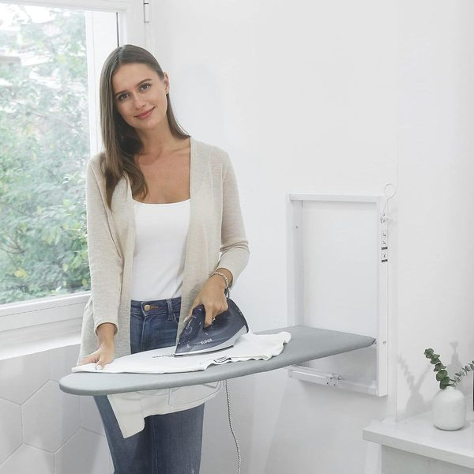

When you have a tiny laundry room—or perhaps just a laundry closet in a hallway—floor space is practically nonexistent. If you try to store hampers, drying racks, and cleaning supplies on the floor, you'll barely have enough room to open the washer door.
The only direction to go is up. Maximizing vertical storage and uncovering hidden "dead zones" is the ultimate key to a highly functional, small laundry space. Here is your complete guide to utilizing vertical storage without overwhelming your laundry room.
Why Vertical Storage Works in Small Laundry Rooms
In a compact laundry room, the footprint is entirely consumed by the appliances themselves. Vertical storage works because it capitalizes on the unused volume of the room. By moving supplies off the machines and onto the walls or doors, you clear the working surfaces, making it easier to load, unload, and fold clothes. It transforms a cramped utility closet into a streamlined workspace where everything has a dedicated home.
Find the Vertical Space You're Not Using
Most people only look at the empty wall directly above the washing machine, but vertical storage opportunities exist everywhere. The back of the laundry room door offers floor-to-ceiling potential. The narrow 5-inch gap between the washer and the dryer is a hidden vertical channel. Even the magnetic sides of the machines themselves can hold lightweight items. Identifying these overlooked zones is the first step to expanding your storage capacity.
Decide What Belongs Up High
Not all laundry supplies are created equal, and they shouldn't all be stored in the same place. High vertical space—such as the top shelves near the ceiling—should be reserved strictly for items you use rarely or buy in bulk. Think extra paper towels, seasonal cleaning supplies, or back-stock detergent. By keeping these bulky items up high, you reserve the premium, accessible zones for your daily essentials.
Keep Everyday Laundry Items Within Easy Reach
The core principle of a functional laundry room is accessibility. The items you use for every single load—detergent pods, stain spray, and dryer balls—must be stored in your immediate vertical reach zone. This usually means the lowest shelf above the machine or a magnetic bin attached directly to the side of the washer. If you have to use a step stool to reach your daily detergent, the system will eventually frustrate you.
Organize Vertical Space Around Your Laundry Workflow
Vertical storage should mirror the steps of doing laundry: sorting, washing, drying, and folding. Store stain removers directly next to the washer. Keep dryer sheets or wool balls directly near the dryer. Mount an ironing board or a fold-down drying rack near the area where you typically pull clothes out to dry. When your vertical storage aligns with your physical movements, doing laundry feels significantly less like a chore.
Avoid Making a Small Laundry Room Feel Crowded
Adding too much vertical storage can make a small room feel claustrophobic, like the walls are closing in on you. To prevent this, avoid extremely deep shelving that hangs over your head while you work. Use slim-profile shelves, and consider decanting brightly colored detergents into uniform, clear containers. Using aesthetic woven bins on higher shelves hides visual clutter and keeps the room feeling calm and organized.
Renter-Friendly Vertical Storage Considerations
If you rent your apartment, drilling into the laundry room walls might not be an option. Fortunately, you can still maximize vertical space. Over-the-door organizers require no installation. Magnetic shelves attach instantly to the metal casing of your appliances. Slim rolling carts slide into gaps without touching the walls. There are plenty of non-permanent ways to build a robust vertical storage system.
Build a Simple Vertical Storage System
Implementing vertical storage is about utilizing specific tools for specific zones. Here are practical ways to capture that space:
Utilize the Back of the Door
The back of the laundry room door is one of the most underutilized storage spots. Install a heavy-duty over-the-door organizer for tall, narrow items like ironing boards or wire baskets filled with spray bottles.

Wall Mounted Ironing Board Holder
Problem: Ironing boards take up massive amounts of floor space when leaned against the wall.
Solution: This over-the-door or wall-mounted rack securely holds both your ironing board and iron on the back of the door.
- Gets the bulky ironing board completely off the floor
- Heat-resistant basket safely stores a hot iron
- Takes advantage of unused door space
Exploit the Gap Between Machines
Look for the narrow gap between your washer and dryer. A super-slim rolling storage cart is specifically designed to slide into these spaces, storing multiple tiers of supplies out of sight.

Slim Rolling Laundry Cart
Problem: Small laundry rooms have zero cabinetry, leaving detergent bottles stranded on the floor.
Solution: A rolling storage cart slides directly into the 5-inch gap between your washer and dryer.
- Transforms wasted gaps into functional shelving
- Keeps unsightly cleaning bottles hidden away
- Rolls out easily to access whatever you need
Go High with Floating Shelves
If you lack built-in cabinets, install heavy-duty floating shelves above your machines, taking them as high as the ceiling allows to store back-stock and daily essentials.
Wall-Mount Everything
Stop using bulky floor-standing drying racks; instead, install an accordion-style drying rack that pulls out from the wall and pushes flat when not in use.
The Magnetic Side of the Machine
The exposed metal side of your washing machine is a blank canvas. Use strong magnetic shelves to store frequently used items directly on the appliance.

Magnetic Washer & Dryer Shelf
Problem: Items stored on top of the washer inevitably vibrate and fall behind the machine.
Solution: This magnetic silicone shelf grips securely to the top of your machines, creating a safe, flat surface with a lip.
- Strong magnets keep it firmly in place during spin cycles
- Prevents items from falling behind the machines
- Perfect for small laundry closets with zero counter space
What Not to Store Vertically
While vertical space is incredibly useful, some items shouldn't be stored there. Avoid placing heavy, liquid-filled bulk detergent jugs on high shelves where they are difficult and dangerous to lift down. Keep extremely heavy items on the floor or on sturdy, low shelving. Vertical storage is best suited for lightweight items, daily supplies, and decanted products.
Maintain the System
To keep your laundry room functional, you must maintain the vertical system. Wipe down shelves monthly to prevent dust and detergent residue from building up. Routinely check your overstock bins on the highest shelves to ensure you aren't holding onto empty bottles or expired cleaning supplies. A quick maintenance check ensures the space remains efficient.
A Quick Vertical Storage Reset
If your laundry room starts feeling cluttered again, do a quick 10-minute reset. Pull everything off your vertical shelves and carts, wipe them down, and only replace the items you genuinely need for washing clothes. Consolidate half-empty bottles and throw away the rest. By shifting your focus from the floor to well-managed walls and hidden gaps, you can store an incredible amount of supplies in a tiny laundry room without sacrificing maneuverability.